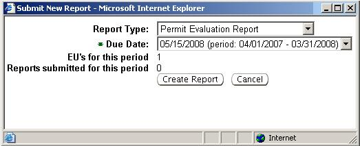
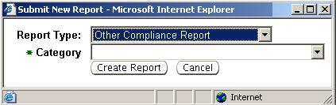

This topic covers the third-level menu, Compliance Report(s),
under the Facility
Profile second-level menu of the Facilities
tab.
When you are viewing a particular Facility Detail,
the Compliance
Report(s) link allows you to view a summary of the
respective
facility’s compliance reports submitted electronically through the
system from an external user, or those entered electronically by an
internal person when the owner or operator submits a hard copy report.
In addition, the Compliance
Report(s) page allows you to create a New
Report, print the summary table, or export the table to
Excel.
On the Compliance
Reports page,
below the header identifying the facility information, is a Reports
datagrid of Compliance
Reports previously submitted by the owner or
operator of the facility.
The columns of the datagrid are described
below:
Report
Id: Unique ID generated by the system for the associated
compliance report.
Report
Type: Description of the associated compliance report as
either TV
Annual Compliance Certification, Permit Evaluation Report
or Other
Compliance Report. Other Compliance
Report represents several
different types of compliance reports that can be submitted using a
standard template and attaching the actual report. The exact type is
selected at the time of electronic entry into the system and is
displayed in this datagrid under the field Category.
Description:
For Other
Compliance Report types only, the unique
description of the report as entered during electronic submission.
Category:
The category of Other
Compliance Report as selected from a
pick list during the electronic submittal process.
Submitted
Date: Date the report was submitted.
Period:
This is the period of time for which compliance is being
reported. Will say N/A
for Other
Compliance Report types; the period of
time will be identified in the actual report attached or in the Description
field.
Accepted:
Indicates the stage of review of the
compliance report by Ohio EPA staff.
Report
Status: Indicates either Draft or
Submitted.
Draft
indicates
the report has been created and electronic entry is in process by an
internal person.
To view any report in the datagrid, select
the Report Id
number hyperlink for the report you want to view. For
help on the contents of these reports, view the Help page for
Compliance
Report Detail.
When a hard copy of a compliance
report is submitted by the owner or operator of a facility, it will be
necessary to enter the report electronically in the system. To create a
new compliance report, click
at the bottom of the Reports
datagrid.
Please note, Title V facilities will be required to submit their TV
Annual Compliance Certification electronically in the
system;
therefore, you will not be able to create a TV Annual Compliance
Certification.
If selecting Permit Evaluation
Report, you see the
pop-up window below. The Due Date
will default to the annual facility
wide due date established for this facility. This date cannot be
changed unless requested by the facility through the system
administrator. The pop-up box will also identify the number of
emissions units for which a Permit Evaluation
Report is due (EU’s for
this period) and number of reports which may have already
been
submitted for the required reporting period (Reports submitted for
this
period) as un-editable fields.

If selecting Other Compliance
Report,
you will enter information as indicated in the pop-up depicted below.
Select the appropriate Category
from the pick list.

Click to generate
the report or click to return to Compliance Reports
page canceling any
report information you just entered electronically.
Depending on the
type of new Compliance
Report created, additional information will be
entered to complete entry of the report. For help on entering these
reports, view the Help page for Compliance Report
Detail.